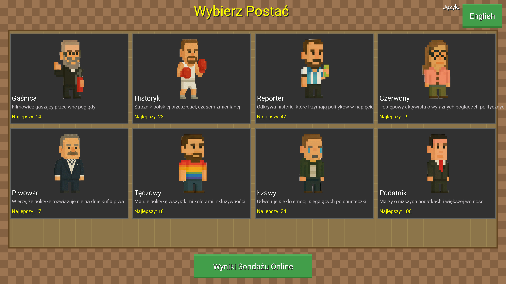
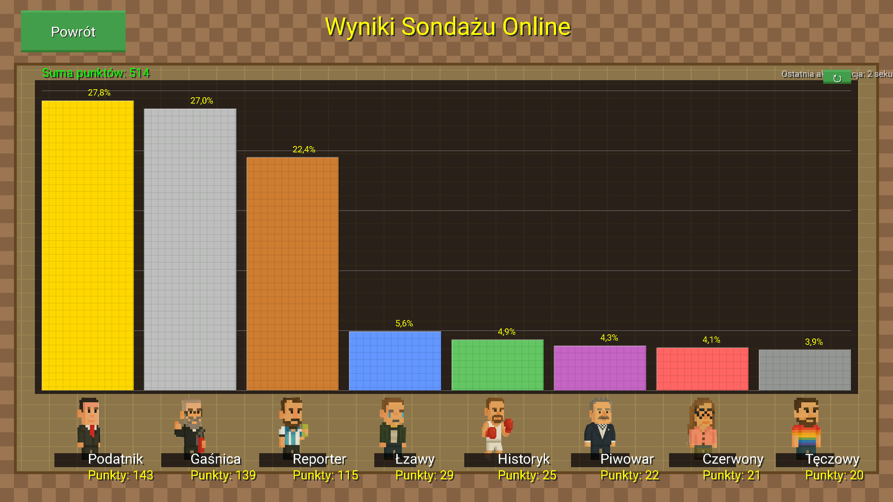
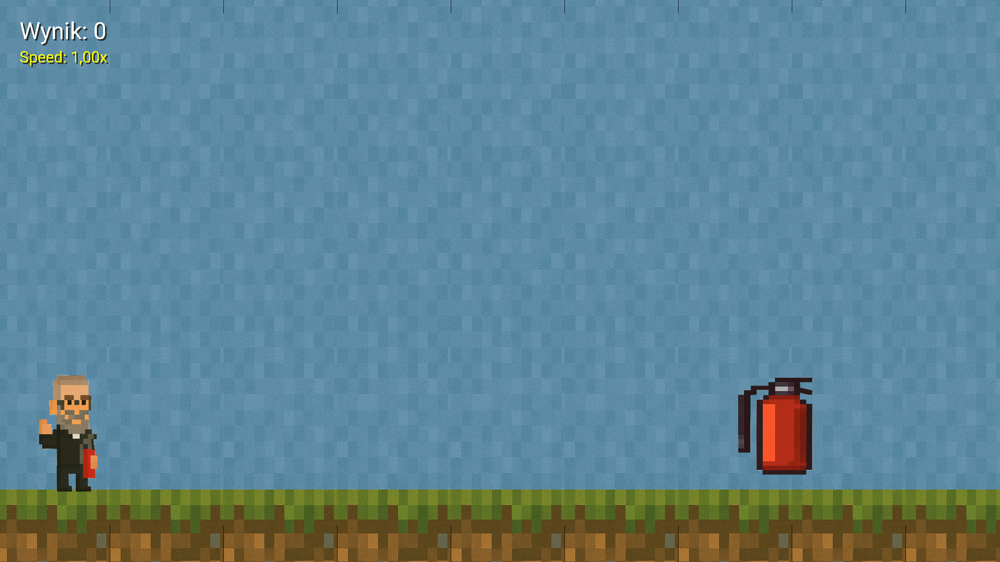
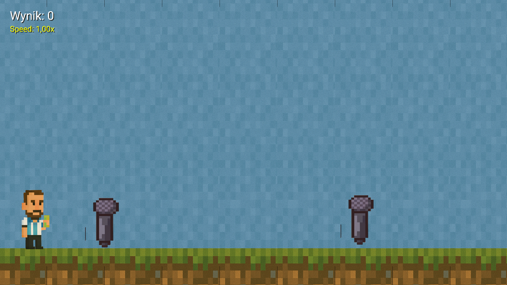
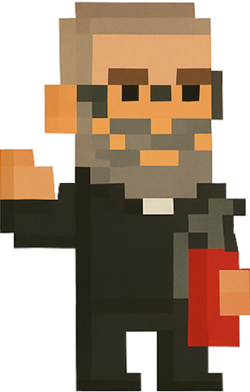

Witamy w Mandate Madness!
Skacz, unikaj i nawiguj przez polityczny krajobraz pełen wyzwań i przeszkód. Wybierz spośród różnorodnych unikalnych postaci, z których każda reprezentuje inne poglądy polityczne, i konkuruj o najwyższy wynik!
Pobierz terazZrzuty ekranu z gry





Wybór postaci
Wybierz spośród różnorodnej obsady postaci, z których każda ma swoje unikalne umiejętności i perspektywy polityczne:
 Reporter - Odkrywa historie, które trzymają polityków w napięciu
Reporter - Odkrywa historie, które trzymają polityków w napięciu Historyk - Strażnik polskiej przeszłości, czasem zmienianej
Historyk - Strażnik polskiej przeszłości, czasem zmienianej- Strażak - Filmowiec gaszący przeciwne poglądy
- Księgowy - Marzy o niższych podatkach i większej wolności
- Tęczowy - Maluje politykę wszystkimi kolorami inkluzywności
- Piwowar - Wierzy, że politykę rozwiązuje się na dnie kufla piwa
- Łzawy - Odwołuje się do emocji sięgających po chusteczkę
- Czerwony - Postępowy aktywista o wyraźnych poglądach politycznych